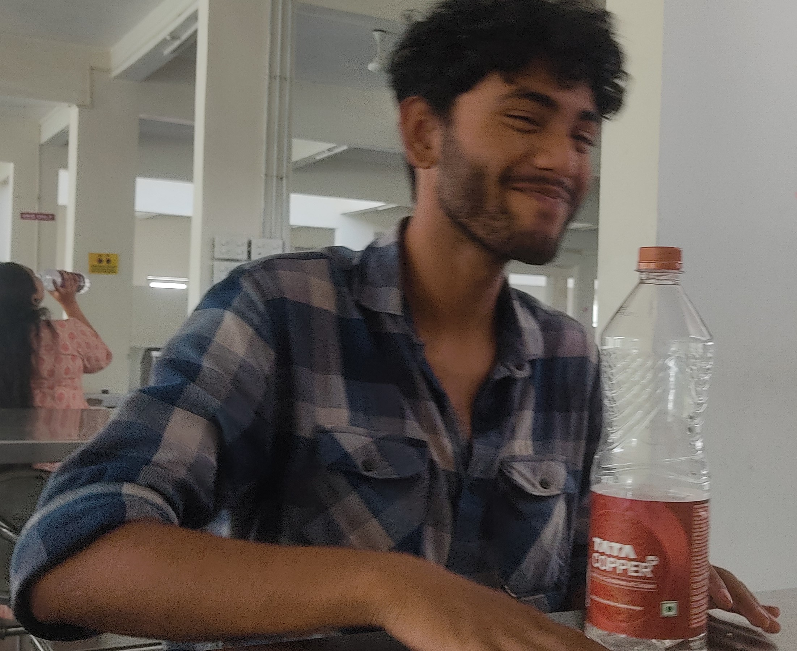

Abhishek Dey

Personal Statement
I am a third-year law student fascinated by the intersection of law and technology.
Currently learning full stack web development alongside my studies. Seeking opportunities
to leverage my dual expertise in innovative solutions. Committed to pushing boundaries and
enhancing legal practices through technology. Welcome to my portfolio website to explore my
work and connect.
Education
- Pursuing Bachealors in Arts and Bachealors in Law (B.A.L.L.B) - Symbiosis Law School, Hyderabad (2021 - presesnt)
- Passed AISCE 2019 from Hem Sheela Model School, Durgapur
- Passed CISCE 2017 from St. Xavier's School, Durgapur
Internships
LITIGATION INTERN, NBS ADVOCATES LAW OFFICE, HYDERABAD (JUNE 2022 – JULY 2022)
- Responsibilities included regular visits to different courts of Hyderabad for the filing of
petitions, overseeing Passovers and executing Power of Attorney in different cases.
- Drafting legal notices, petitions, the examination and submission of evidence were just a
few of the numerous office tasks at hand.
- Was a thorough exploration of the fundamental yet useful facets of law.
LEGAL RESEARCH INTERN, INDEPENDENT THOUGHT, NOIDA (FEBRUARY 2022 – MARCH 2022)
- Responsibilities included researching on socially relevant topics which included child right
violations on the internet during the pandemic, migration in India, victims of women centric legislation and the POSH Act.
- Was also tasked with updating proprietary database of cases.